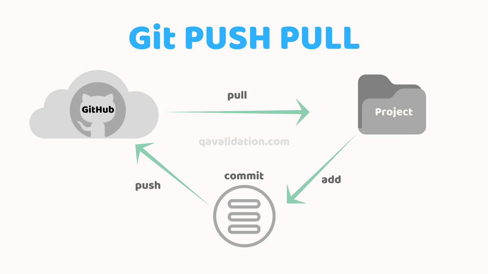

3 Git - sistema de control de versiones
3.1 Trabajo previo
3.1.1 Tutoriales
Abba, I. V. (2021). Git and GitHub Tutorial – Version Control for Beginners. FreeCodeCamp.Org. https://www.freecodecamp.org/news/git-and-github-for-beginners/
3.1.2 Otros
Instale en su computadora el sistema de control de versiones Git.
3.2 Resumen
Git es un sistema para administrar versiones de código fuente o, en general, de cualquier conjunto de archivos.
3.3 Descripción general
Git es un sistema de control de versiones diseñado para “rastrear” cambios en el código fuente durante el proceso de desarrollo de software. Sin embargo, puede ser utilizado para llevar el control de los cambios en cualquier conjunto de archivos (ej. documentación, música).
Un sistema de control de versiones proporciona, entre otras ventajas:
- La capacidad de recuperar versiones anteriores de los archivos.
- La capacidad de integrar modificaciones efectuadas por varias personas en el mismo conjunto de archivos.
- La capacidad de mantener varias “ramas” (branches) de un producto (ej. “estable”, “evaluación”, “inestable”, como en el caso de Debian Linux, GRASS GIS y muchos otros proyectos de software libre).
- Facilidades para mantener redundancia y respaldos de los archivos (ej. Programa de respaldos de GitHub). Esta es una facilidad que implementan algunos servicios en la nube.
Git fue diseñado por Linus Torvalds en 2005 durante del desarrollo del kernel del sistema operativo Linux. Se caracteriza por ser un sistema de control de versiones distribuido, lo que significa que el código fuente puede estar alojado en la estación de trabajo de cualquier miembro del equipo de desarrollo. No se requiere de un repositorio “central”, pero también se puede trabajar de esa forma.
El protocolo de Git es utilizado en varios sitios que proveen servicios de alojamiento de software, entre los que están SourceForge, Bitbucket, GitLab y GitHub.
3.4 Funcionamiento de Git
Desde el punto de vista de un usuario de Git (ej. un programador), Git se utiliza para sincronizar la versión local (i.e. en una computadora personal) de un conjunto de archivos, llamado proyecto o repositorio, con la versión que está alojada en un sistema remoto (ej. GitHub). Cada repositorio se almacena en un directorio (carpeta) del sistema operativo. La sincronización se realiza principalmente a través de dos operaciones:
- push: para “subir” al repositorio remoto los cambios realizados en el repositorio local. Esta operación se realiza mediante el comando git push. Es probable que el sistema remoto le solicite al usuario algún tipo de autenticación (ej. nombre de usuario y clave).
- pull: para “bajar” al repositorio local los cambios realizados en el repositorio remoto. Esta operación se realiza mediante el comando git pull.
Las operaciones push y pull se ilustran en la Figure 3.1.
Antes de un push, el usuario debe seleccionar los archivos que desea subir mediante el comando git add, el cual pasa los archivos a un “área de espera” (staging area). Luego debe usarse el comando git commit para “guardar” los cambios pendientes en el área de espera. Cada commit guarda el estado del conjunto de archivos en un momento específico (snapshot).
La relación entre estas operaciones de Git, se ilustra en la Figure 3.2.

En la Figure 3.3, se muestra el funcionamiento de Git mediante una comparación con el procesamiento de una compra en línea.

Otras operaciones de Git de uso frecuente son:
- git config: para especificar opciones globales de la sesión de Git (ej. nombre del usuario, dirección de correo electrónico).
- git init: para inicializar un repositorio git.
- git clone: para clonar (i.e. copiar) un repositorio remoto en la computadora local.
- git status: para revisar el estado de los archivos y, por ejemplo, saber cuales deben pasarse al área de espera.
- git log: para revisar el historial de commits.
- git show: para visualizar los cambios efectuados en los commits.
- git reset: para regresar al estado correspondiente a un commit anterior.
3.5 Ejemplos de uso
3.5.1 Clonación de un repositorio remoto y sincronización de los cambios efectuados localmente
Para seguir este ejemplo:
- Obtenga un token de GitHub en la siguiente opción de menú de su perfil de usuario: Settings - Developer settings - Personal access tokens. Seleccione las operaciones de tipo “repo”. Copie el token en un lugar seguro, ya que lo necesitará para autenticarse en GitHub.
- Realice un fork a su cuenta en GitHub del repositorio localizado en la dirección https://github.com/pf0953-programacionr/2022-ii-tutorial-git-repo-ejemplo. Obtendrá un repositorio llamado “https://github.com/[nombre-usuario]/2022-ii-tutorial-git-repo-ejemplo”, en donde [nombre-usuario] es su nombre de usuario en GitHub.
- Con la opción File - New Project - Version Control - Git de RStudio, clone a su computadora el repositorio que acaba de bifurcar.
- Con el editor de RStudio, abra el archivo
README.md, agregue una línea y guarde el archivo. - Luego, ejecute los siguientes comandos desde la la ventana Terminal de RStudio. Nota: las líneas que empiezan con
#son comentarios.
# a. Parámetros de configuración: nombre y dirección de correo del usuario.
# Debe cambiar [email-usuario] y [nombre-usuario] por sus propios datos.
git config --global user.email [email-usuario]
git config --global user.name [nombre-usuario]
# Para revisar los parámetros de configuración:
git config --global --list
# b. Revisión de los archivos con modificaciones.
git status
# c. Adición (add) de los archivos modificados al "área de espera".
# El punto (.) indica que se agregarán todos los archivos modificados.
git add .
# d. Grabado (commit) del conjunto de archivos modificados,
# junto con un mensaje explicativo:
git commit -m "Agregar línea 2"
# e. "Subida" (push) de las modificaciones al repositorio remoto.
# En este paso, es posible que deba utilizar su nombre de usuario/clave
# o su token de GitHub para autenticarse.
git push- Revise los cambios aplicados en el repositorio remoto en GitHub.
- Agregue más líneas al archivo del repositorio local y sincronícelo con el remoto, realizando nuevamente los pasos del b al e para cada commit. Recuerde que los comentarios de cada
commitdeben reflejar los cambios que están siendo aplicados.
3.6 Recursos de interés
Git. (s. f.). Recuperado 28 de agosto de 2022, de https://git-scm.com/
GitHub Archive Program. (s. f.). GitHub Archive Program. Recuperado 10 de abril de 2022, de https://archiveprogram.github.com/
Higgins, M. (s. f.). Reproducible Templates for Analysis and Dissemination. Coursera. Recuperado 11 de abril de 2022, de https://www.coursera.org/learn/reproducible-templates-analysis
Klavins, S. (2020). Version Control part 1. Medium. https://stevenklavins94.medium.com/version-control-part-1-c5f1b43127f6